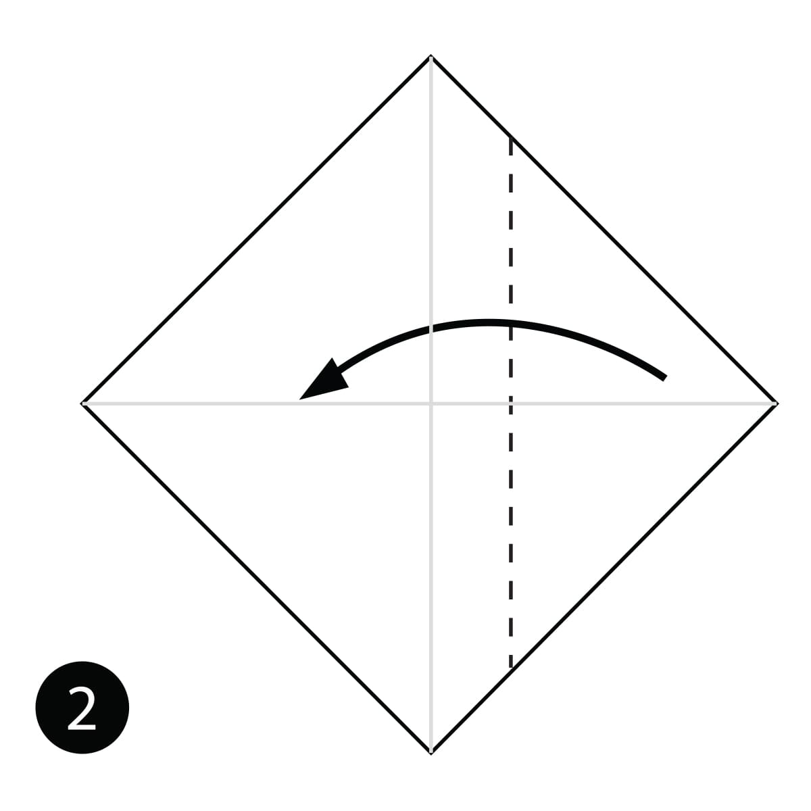
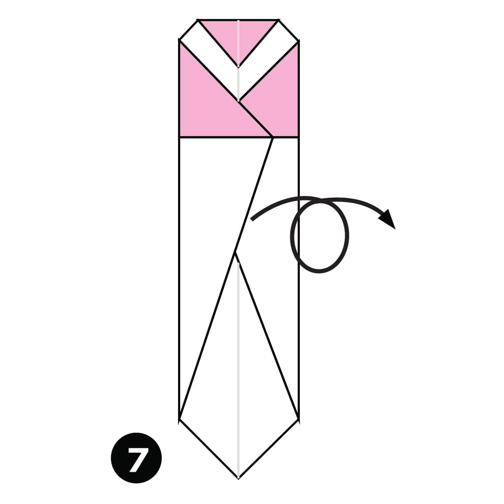

Step 1
Fold the paper in half and then unfold it.

Step 2
Fold the side of the paper in along the dotted line.
Step 3
Fold the top layer of paper out along the dotted line.
Step 4
Fold the side in along the dotted line.
Step 5
Fold the paper out along the dotted line.
Step 6
Fold the top part of the paper down along the dotted line.

Step 7
Turn the paper over.
Step 8
Fold the bottom part of the paper up along the dotted line.
Step 9
Make a Pleat fold along the dotted lines.
Step 10
Turn the paper over.
Step 11
Fold the paper on each side towards the centre along the dotted lines. Make a Swivel Fold as you do on each side and push everything flat. Take a look at the next diagram to see the final position of the folds.

Step 12
Turn the paper over.
Completed
The complete popsicle